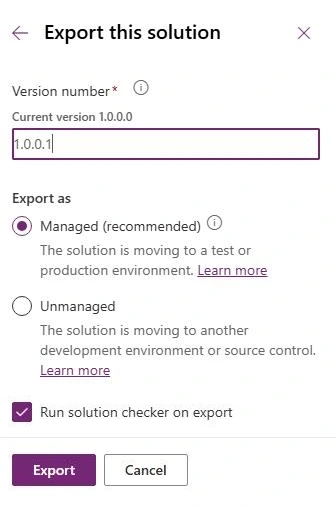
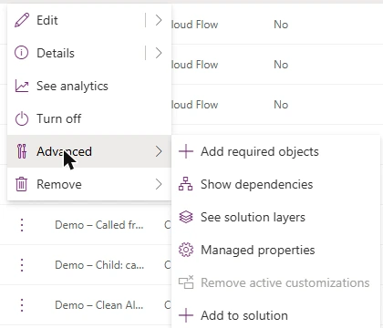
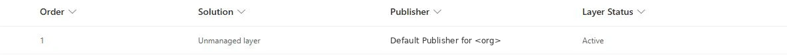

- Power Automate
- Level 10 · Enterprise ALM and admin · 1 of 6
Managed and unmanaged solutions, layers and upgrades
Moving a solution from Dev to Test to Prod many times depends on three ideas: managed vs unmanaged, layers, and upgrades.
Managed vs unmanaged
WhatUnmanaged is the editable source; managed is the locked package you deploy.
WhyDeploying unmanaged to Prod makes changes untraceable and hard to remove.
DemoThe export panel's choice for the demo solution.
Which export?
Where is it going?
Another Dev environment or source control
Unmanaged
Test or Production
Managed (recommended)

| Unmanaged | Managed | |
|---|---|---|
| Where | Dev and source control | Test and Prod |
| Edit objects? | Yes | Only what managed properties allow |
| Deleting it | Removes the container; objects stay | Removes the solution and everything in it |
| Export | Yes | No: export from the unmanaged source |
Layers: what actually runs
The layer stack for one flow (top wins)
Unmanaged layer (Active): someone edited in this environment
Managed layer: solution v1.0.0.2
Managed layer: solution v1.0.0.1
In Prod, an unmanaged layer on top hides every later managed upgrade.


If a deployed fix doesn't take effect, check the layers; Remove active customizations deletes the unmanaged layer so the managed version shows.
Shipping new versions
| Import option | What it does | Use when |
|---|---|---|
| Update (default) | Replaces the layer; removed objects stay behind | You only added or changed things |
| Upgrade | Also deletes objects no longer in the solution | You removed flows or columns |
| Stage for upgrade | Imports alongside the old one, then apply | Data must be migrated first |
| Patch | A partial solution | Prefer full updates; patches complicate layers |
Versions are major.minor.build.revision; raise one on every export.
New to this? Start from the basics optional
Layer: one solution's version of an object; layers stack and the top one wins.
Common mistakes
- Unmanaged imports into Prod.
- Hot-fixing in Prod, creating an unmanaged layer.
- The same version number every export.
- The default publisher.